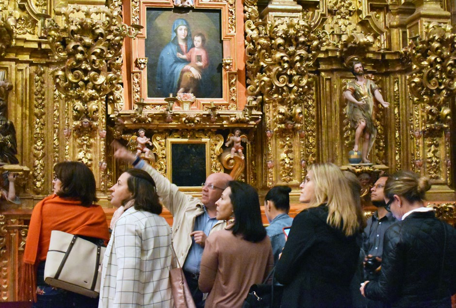

Clases en vivo, sin ir al campus
Es presencial en aula virtual: todas tus clases son en vivo por videoconferencia y ves a tu profesor en cada sesión. No necesitas trasladarte a ningún campus.
Ejecutivas · En línea
Transmite. Transforma. Trasciende.
¿Es para ti?
La Licenciatura en Ciencias Religiosas de la Universidad Anáhuac México se estudia en línea, con clases en vivo por videoconferencia. Estudias teología, Sagrada Escritura y filosofía en 11 cuatrimestres, con Reconocimiento de Validez Oficial de Estudios (RVOE) de la SEP. Es para ti si te reconoces en lo siguiente.
Participas en la vida de tu parroquia o comunidad: catequesis, liturgia, pastoral o atención a migrantes.
Quieres estudiar la Sagrada Escritura, la teología y la filosofía con rigor académico.
Das clases o formas a otras personas y quieres un respaldo académico para hacerlo mejor.
Trabajas o tienes otras responsabilidades y necesitas estudiar sin trasladarte a un campus.
Estudian con nosotros laicos, religiosas y sacerdotes de 18 a 70 años, de México, de Latinoamérica y de comunidades hispanas de Estados Unidos. Aprendes junto a personas que, como tú, quieren conocer mejor su fe para vivirla y transmitirla.
¿Por qué la Universidad Anáhuac México?
Una licenciatura con validez oficial, pensada para adultos que estudian a distancia y quieren hacerlo con profundidad.



Es presencial en aula virtual: todas tus clases son en vivo por videoconferencia y ves a tu profesor en cada sesión. No necesitas trasladarte a ningún campus.
Todas las clases se graban. Si tu horario no te permite conectarte en vivo, puedes cursar tus materias con las grabaciones y seguir trabajando.
Estudias teología, Sagrada Escritura, filosofía e historia de la Iglesia con un programa fiel a la tradición eclesial, para vivir y transmitir la fe en el mundo de hoy.
La coordinación académica de la licenciatura te acompaña de forma personal durante toda la carrera, con una metodología basada en la educación personalizada.
La licenciatura tiene Reconocimiento de Validez Oficial de Estudios (RVOE) de la SEP. La Universidad Anáhuac México forma parte del 3 % de las instituciones privadas con la acreditación «Lisa y Llana» de FIMPES.
Complementas tu formación con webinars, talleres y conferencias virtuales, y usas la biblioteca digital y las licencias de software de la universidad como alumno.
Conoce a fondo la Sagrada Escritura, a María y a la Iglesia. Las materias que más disfrutan nuestros alumnos son las del bloque de Biblia (Introducción a la Sagrada Escritura, Antiguo Testamento y Nuevo Testamento) y Eclesiología y mariología.
Perfil de egreso
11 Cuatrimestres (3 años y 8 meses)
31 Asignaturas, 4 de ellas electivas
Con el plan de referencia. El tiempo puede variar según el número de materias que curses cada cuatrimestre.
Plan de estudios
Cursas 27 materias obligatorias de teología, Sagrada Escritura, filosofía, historia de la Iglesia, pedagogía y psicología, y eliges 4 electivas para orientar tu formación. Para titularte concluyes el plan al 100 % y tu servicio social.
RVOE SEP · D.O.F. 26/11/1982 (abre el documento oficial del RVOE)
Campo laboral
Tu formación teológica, filosófica y humanística se aplica en parroquias, escuelas, asociaciones, medios y proyectos sociales, y te abre la puerta a maestrías y doctorados.
Estudia Ciencias Religiosas en la Universidad Anáhuac México y prepárate para transmitir la fe, formar personas y proponer respuestas a los retos de la sociedad, con clases en vivo, acompañamiento personalizado y validez oficial.
Modalidad
Estudias en un aula virtual: tu profesor da cada clase en vivo y tú participas desde donde estés. No necesitas ir a ningún campus.
Ves a tu profesor en todas las clases, haces preguntas y participas con tus compañeros.
Cada clase queda grabada. Si no puedes conectarte en vivo, la ves después y avanzas a tu ritmo.

Como alumno usas la biblioteca digital y las licencias de software de la universidad.
Siempre hay seminarios virtuales para complementar tu formación.
Leones Anáhuac que han transformado sus vidas con nosotros
"[cita en primera persona]"
[Nombre], egresado(a) de Ciencias Religiosas, generación [año]
"[cita en primera persona]"
[Nombre], egresado(a) de Ciencias Religiosas, generación [año]
Docencia y acompañamiento
Aprendes con profesores que dan cada clase en vivo, y la coordinación académica de la licenciatura te acompaña de forma personal durante toda la carrera.
Cargo o logro profesional pendiente de la coordinación.
Cargo o logro profesional pendiente de la coordinación.
Cargo o logro profesional pendiente de la coordinación.
Cargo o logro profesional pendiente de la coordinación.
Siguiente paso
Avanza a tu ritmo: explora costos y apoyos, revisa los requisitos, inicia tu admisión o habla con un asesor.
Calcula la inversión de tu licenciatura y conoce las opciones de pago.
CotizarEnvía tu solicitud y tus documentos para comenzar.
EmpezarSin examen de conocimientos: tus documentos y un examen psicométrico.
ConsultarDescubre las becas y apoyos económicos disponibles para estudiar aquí.
Ver apoyosResuelve tus dudas con un asesor preuniversitario.
ContactarPreguntas frecuentes
Con el plan de referencia dura 11 cuatrimestres, es decir, 3 años y 8 meses. El tiempo puede variar según el número de materias que curses cada cuatrimestre.
Sí, es una licenciatura en aula virtual: todas las clases son en vivo por videoconferencia y ves a tu profesor en cada sesión. No necesitas ir al campus.
Sí. Todas las clases se graban, así que si no puedes conectarte en vivo puedes cursar tus materias con las grabaciones, a tu ritmo.
Es una licenciatura con Reconocimiento de Validez Oficial de Estudios (RVOE) de la SEP. Al concluir el plan de estudios y tu servicio social obtienes tu título de licenciatura.
Es la Licenciatura en Ciencias Religiosas, fiel a la tradición de la Iglesia. Su plan incluye teología, Sagrada Escritura, filosofía, historia de la Iglesia, liturgia y Doctrina Social de la Iglesia.
La Universidad Anáhuac México es una universidad privada de inspiración católica. Su formación integral parte del humanismo cristiano.
Solicitud de admisión, acta de nacimiento, certificado de bachillerato, copia de la CURP, fotografía digital, carta de motivos, una carta de recomendación y un examen psicométrico. No hay examen de conocimientos.
Concluyes el plan de estudios al 100 % y tu servicio social. Puedes proponer tu propio proyecto de servicio social, por ejemplo en tu parroquia o en un colegio, y si ya tienes otra licenciatura puedes revalidarlo.
El costo depende del número de materias que curses cada cuatrimestre. Para conocer los costos vigentes, usa el cotizador o pregúntale a un asesor preuniversitario.
Mucho más que solo una Universidad.
Conoce por qué vivirás una experiencia universitaria única con nosotros.
Conoce la experiencia AnáhuacDesarrolla las habilidades, conocimientos y experiencia que necesitas para construir un perfil integral. Nuestro modelo educativo integra formación profesional, intelectual, humana, social y espiritual.
Amplía tu experiencia con intercambios, convenios y opciones académicas que amplían tu perspectiva y enriquecen tu formación dentro y fuera del aula.

Haz deporte, participa en actividades culturales, involúcrate en proyectos sociales y forma parte de una comunidad activa.
Disfruta de espacios creados para tu desarrollo integral: deportes, salud, innovación y recursos únicos que encontrarás en la Universidad Anáhuac México.

Solicita información
Cuéntanos qué te interesa y te enviaremos el material directamente a tu correo o WhatsApp. Si prefieres hablar con alguien, contacta a un asesor desde «Elige el siguiente paso».